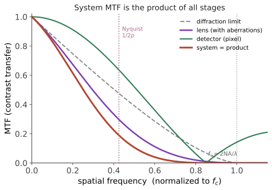

探测 III · 成像质量与计算成像
层次：本科核心 + 业界标准语言 + 前沿方向。 "这个镜头好不好"需要一个客观答案。MTF 提供了它——把成像系统当作空间频率的滤波器（承第四页 4f 系统）。本页先讲清 MTF 这套语言，再讲计算成像如何模糊了"光学"与"算法"的边界，以及它的真实边界在哪。
一、MTF：成像系统的频率响应
承第四页：成像是线性滤波，\(\tilde{I} = \tilde{O}\cdot\mathrm{OTF}\)。
- PSF：点扩散函数（对点源的响应）；
- OTF = FT{PSF}；MTF = |OTF|：对不同空间频率的对比度传递能力；
- PTF = arg(OTF)：相位传递，影响图像的位置与形状失真（相位反转会造成伪细节）。
读 MTF 曲线的方法： - 横轴：空间频率（lp/mm 或 cycles/mm）；纵轴：对比度传递（0–1）； - 低频 MTF 高 → 反差好、通透；高频 MTF 高 → 细节锐利； - 截止频率：\(f_c = \frac{2\mathrm{NA}}{\lambda}\)（非相干成像），超过它的信息完全不进入系统（第四页）； - 衍射极限 MTF 是理论上限，实际系统因像差而低于它。

级联规则：
这个乘法关系给出一条重要的工程判断：任何一环很差，整体就好不了。 给一个平庸的镜头配一个高像素传感器，或反之，都是浪费——匹配比单项优秀更重要（承本课导论 §3）。
探测器的 MTF：像素是有限大小的方形，对光强做空间积分 → 相当于一个 sinc 型低通，首个零点在 \(1/p\)（\(p\) 为像素间距）。
混叠：奈奎斯特频率 \(f_N = 1/(2p)\)。高于它的空间频率会折叠成低频伪信号（摩尔纹、伪色）。 对策：光学低通滤波器（OLPF，故意轻微模糊）——但现代高像素传感器多已取消它，因为像素已足够密，且宁可保留锐度、用算法处理偶发摩尔纹。这是一个典型的"从光学解决转向算法解决"的迁移。
二、其他评价指标
- 点列图与波前误差：设计阶段常用。瑞利判据：波前 RMS 误差 \(<\lambda/14\)（或 PV \(<\lambda/4\)）视为"衍射受限"；
- 斯特列尔比（Strehl ratio）：实际 PSF 峰值 / 理想 PSF 峰值，> 0.8 通常认为接近衍射受限；
- 对比度、杂散光与鬼像：镀膜与遮光设计的责任（第三页）；
- 畸变与色差：可部分由算法校正（第二页）。
三、计算成像：重新划分光学与算法的边界
传统思路：光学系统尽力做到完美 → 探测器忠实记录 → 图像即最终产品。
计算成像的思路：光学与算法联合设计——光学系统不必产生"好看"的图像，只需编码足够的信息，由算法解码出所需结果。
代表性技术：
| 技术 | 思想 |
|---|---|
| 相位编码/波前编码 | 故意引入特定像差，使 PSF 对离焦不敏感 → 算法反卷积后获得极大景深 |
| 光场相机 | 微透镜阵列记录光线的方向信息 → 可事后重聚焦（代价：空间分辨率大幅下降） |
| 压缩感知成像 | 利用信号稀疏性，用远少于奈奎斯特的测量重建（单像素相机） |
| 编码孔径 | 用特定图案孔径，可做深度估计或 X 射线/伽马成像（无法用透镜时） |
| 多帧/多曝光合成 | HDR、超分辨、去噪（承第十页） |
| 无透镜成像 | 传感器紧贴掩模，全靠计算重建 → 极薄，用于生物芯片 |
成功的关键在于"联合设计"：单独看，编码光学产生的原始图像往往很糟；但光学 + 算法作为整体，性能可超越任何一方单独优化的结果。
这与 🔗 微电子站第九页"把模拟难题转成数字问题"、第二页"畸变交给软件"是同一条主线——把约束从难的域转移到便宜的域。
四、诚实的边界：算法能做什么、不能做什么
这是本页最需要清醒的部分（承第四页）：
能做： - 补偿已知的、可逆的退化（反卷积、畸变校正、色差校正）； - 提高 SNR（多帧平均——因为真的增加了光子）； - 利用先验重建欠采样数据（压缩感知，前提是信号确实稀疏）； - 提取非图像信息（深度、材质、光谱）。
不能做： - 恢复截止频率之外的信息——它根本没有进入系统； - 突破散粒噪声极限（第九页）——光子数就那么多； - 凭空创造真实细节。
关于"AI 超分辨"：生成模型能产生看起来清晰的图像，但那些细节是根据训练先验推测的，不是测量到的。
这在不同场合的性质截然不同： - 消费摄影中，"看起来好"可能就够了； - 在医学影像、司法取证、科学测量中，这是不可接受的——推测出的细节可能构成误诊或错误证据。
判读此类工作的标准问题：这些高频信息来自测量还是来自先验？有没有在"真值已知"的独立数据上验证过？ 这与 🔗 生物站、语言站反复强调的判读纪律完全一致。
五、系统工程视角
设计一个成像系统时，需要联合考虑：
常见的失衡（都是实际项目中反复出现的）： - 高级镜头配廉价传感器（或反之）； - 忽略照明——很多机器视觉问题的最佳解法是改善照明，而不是换更好的相机或写更强的算法。这是视觉工程中最实用的一条经验； - 只优化 MTF 而忽略噪声：MTF 高但 SNR 低的系统，实际观感很差。
综合指标：单看 MTF 或单看 SNR 都不够，可用噪声等效调制（NEM）或可探测量子效率（DQE）等把两者结合（医学影像领域尤其常用 DQE）。
六、要点
- MTF 是成像系统的频率响应，系统 MTF 是各环节相乘 → 匹配比单项优秀更重要；
- 像素带来 sinc 型 MTF 与奈奎斯特混叠；OLPF 的取消是"光学问题交给算法"的迁移；
- 斯特列尔比 > 0.8 视为接近衍射受限；
- 计算成像的核心是光学与算法联合设计，把约束转移到便宜的域；
- 算法不能恢复未进入系统的信息、不能突破散粒噪声——AI 超分辨的细节来自先验而非测量，在医学与司法场合不可接受；
- 改善照明常比升级相机或算法更有效。
线三结束。下一线转向光的另一大用途——传输信息。光纤是人类建造过的最重要的信息基础设施。